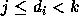

| Tree's a Crowd |
Dr William Larch, noted plant psychologist and inventor of the phrase ``Think like a tree--Think Fig'' has invented a new classification system for trees. This is a complicated system involving a series of measurements which are then combined to produce three numbers (in the range [0, 255]) for any given tree. Thus each tree can be thought of as occupying a point in a 3-dimensional space. Because of the nature of the process, measurements for a large sample of trees are likely to be spread fairly uniformly throughout the whole of the available space. However Dr Larch is convinced that there are relationships to be found between close neighbours in this space. To test this hypothesis, he needs a histogram of the numbers of trees that have closest neighbours that lie within certain distance ranges.
Write a program that will read in the parameters of up to 5000 trees and determine how many of them have closest neighbours that are less than 1 unit away, how many with closest neighbours 1 or more but less than 2 units away, and so on up to those with closest neighbours 9 or more but less than 10 units away. Thus if is the distance between the i'th point and its nearest neighbour(s) and  , with j and k integers and k = j+1, then this point (tree) will contribute 1 to the j'th bin in the histogram (counting from zero). For example, if there were only two points 1.414 units apart, then the histogram would be 0, 2, 0, 0, 0, 0, 0, 0, 0, 0.
Input will consist of a series of lines, each line consisting of 3 numbers in the range [0, 255]. The file will be terminated by a line consisting of three zeroes.
Output will consist of a single line containing the 10 numbers representing the desired counts, each number right justified in a field of width 4.
10 10 0 10 10 0 10 10 1 10 10 3 10 10 6 10 10 10 10 10 15 10 10 21 10 10 28 10 10 36 10 10 45 0 0 0
2 1 1 1 1 1 1 1 1 1